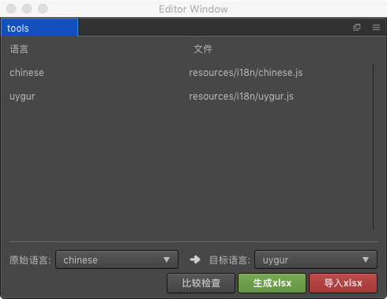

工具使用教程
在阅读使用教程前,建议详细阅读下工作流程
通过菜单扩展->i18n->tools打开工具面板

使用步骤
使用前,必须指定必要的参数
- 原始语言: 这个将会作为生成Excel的数据来源依据
- 目标语言: 待翻译的语言
点击
生成Excel就可以生成Excel供翻译人员进行填写- 注意:生成规则是,如果目标语言对应的key有值,会自动填写到Excel中,所以这样就很方便迭代翻译
导入Excel,将翻译人员填写好的Excel导入到工具,工具会自动序列化一份{目标语言}.js,同时会提示导入
- 点击
确定,导入到项目,即可完成翻译文件的制作
比较检查
当原始翻译内容发生了变化,增加变动了翻译内容,那么我需要通知翻译人员进行迭代翻译,那么比较检查会给出提示
提示类型大致分3种:
- 丢失的key
| - | 原始语言 | 目标语言 |
|---|---|---|
| key | ✔ | ✘ |
- 多余的key
| - | 原始语言 | 目标语言 |
|---|---|---|
| key | ✘ | ✔ |
- 空字符串key
| - | 原始语言 | 目标语言 |
|---|---|---|
| key | 空字符串("") | * |